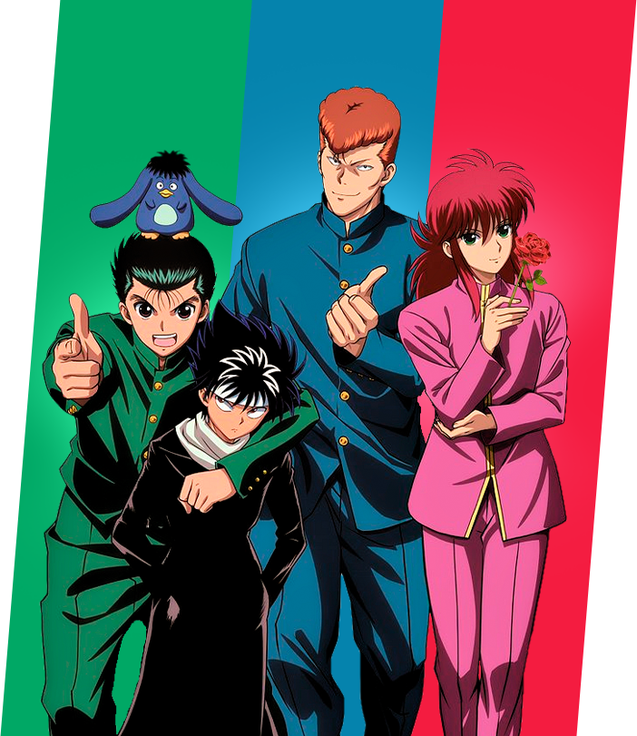

Yu Yu Hakusho acompanha Yusuke Urameshi, um garoto problemático que morre ao salvar uma criança, mas ganha uma nova chance como Detetive Espiritual. Agora, ele enfrenta forças sobrenaturais, desvendando mistérios entre o mundo humano e o espiritual.
Assista no YouTube
